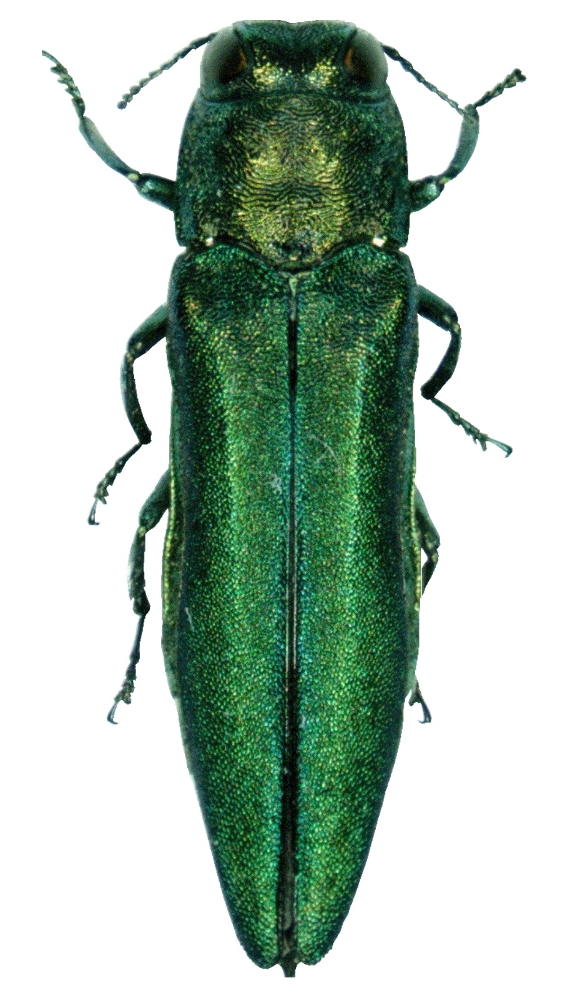
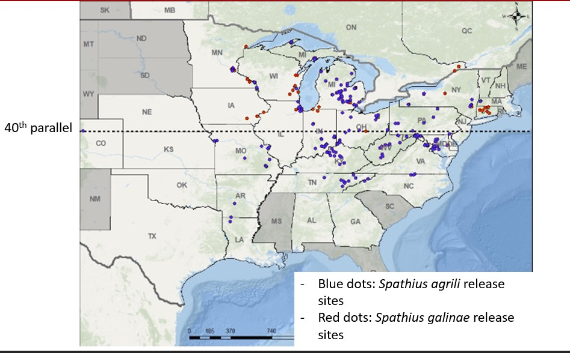
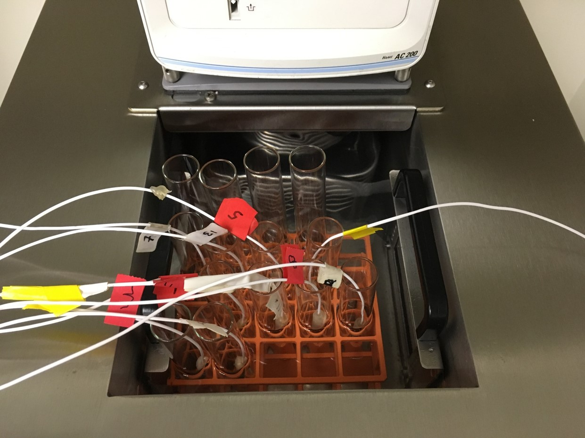
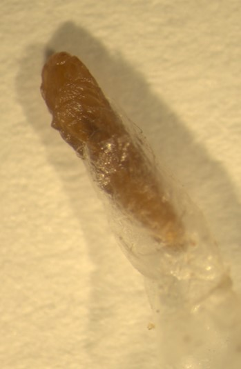
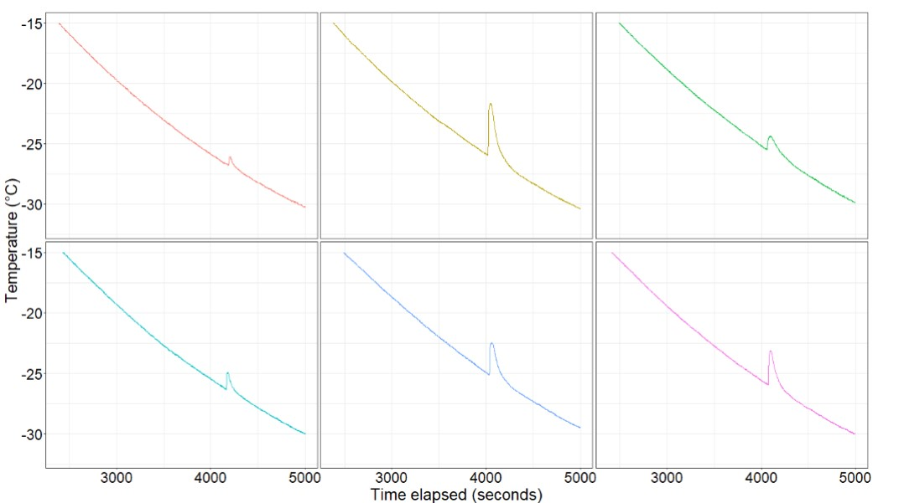
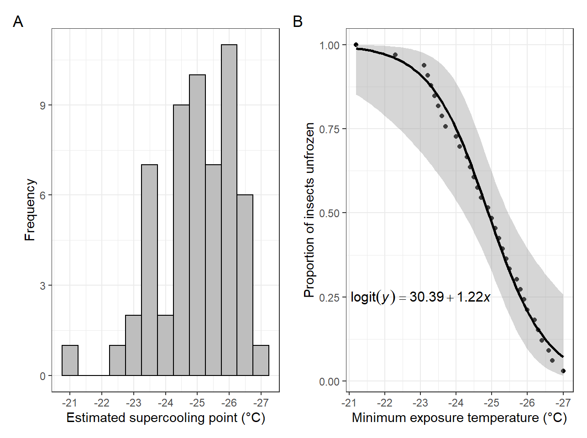
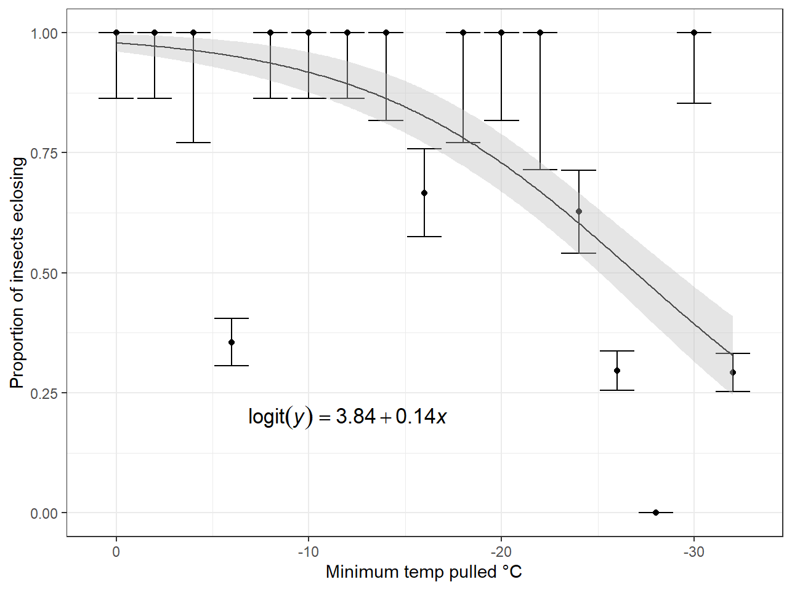
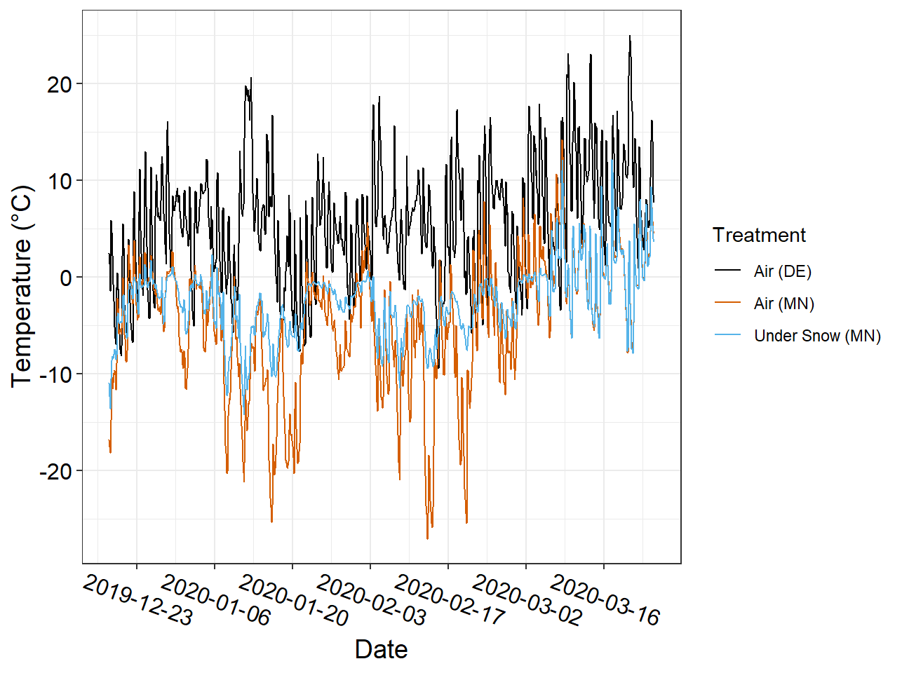
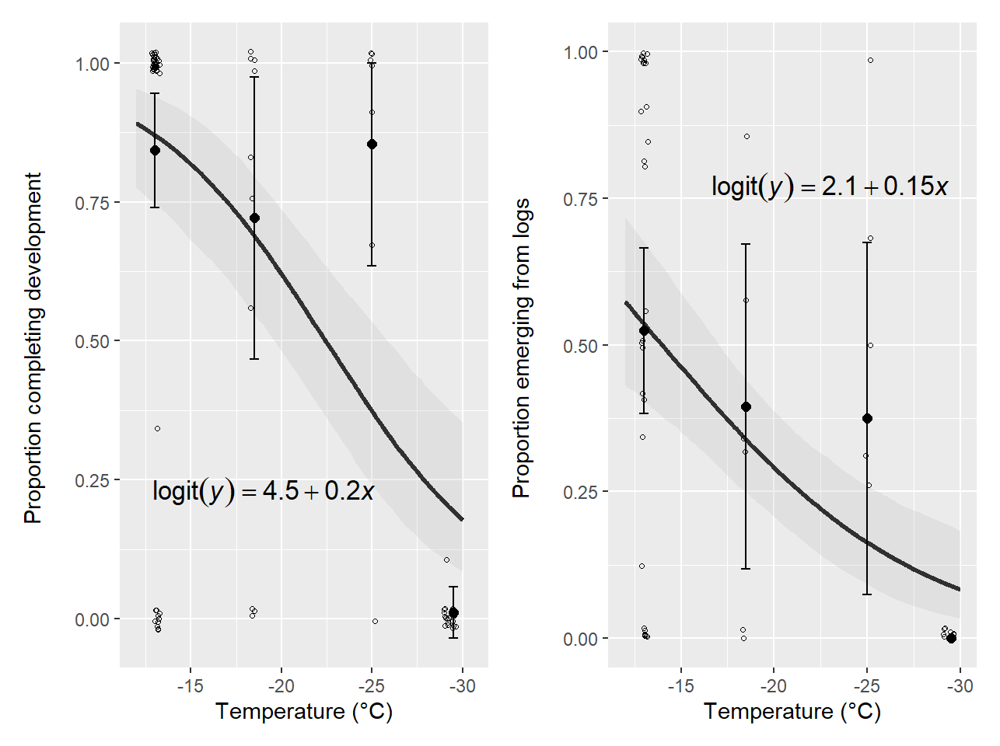
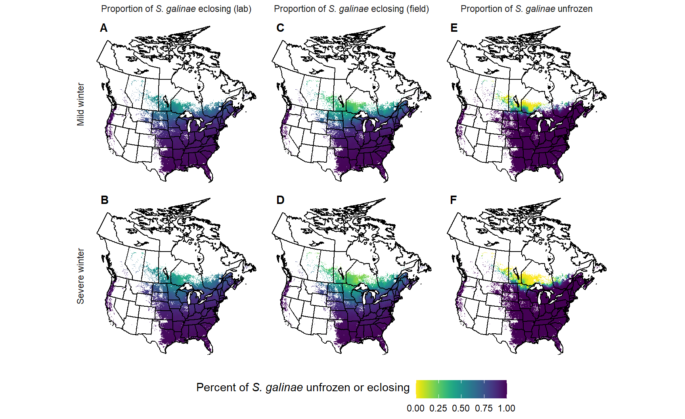

[1] "F:/Documents/website/posts/2022-01-11_how-cold-is-too-cold"[1] "F:\\Documents\\website"[1] "F:\\Documents\\website"[1] "F:\\Documents\\website"[1] "F:/Documents/website/posts/2022-01-11_how-cold-is-too-cold"[1] "F:\\Documents\\website"[1] "F:\\Documents\\website"[1] "F:\\Documents\\website"Tl;dr: A wasp we use to control populations of an invasive beetle in North America should be able to survive most winters in the northern range of locations it would be released. This is good, because it’s potential ability to survive in the north is part of the reason it was selected as a biological control agent.
If you live in the eastern half of the United States and are a fan of trees, you’ve probably heard about emerald ash borer. This little jewel beetle is destroying ash trees here in the United States. It arrived in Michigan in the 1990s and was first detected in the early 2000s. It was most likely introduced on some solid wood packing material brought over from it’s native range in eastern Asia. The beetle is an insidious killer, causing virtually 100% ash mortality in areas where it has spread to in North America. The beetle spends the majority of it’s life feeding as a larva underneath the bark of ash trees, which makes it very difficult to detect early on. It is often not detected for several years, at which time ash trees will start to shows signs of infestation. At this point though, the beetle populations will be so large and spread out eradication is virtually impossible.

One tool we have to combat the spread of this insect is a classical biological control program. Biological control (often abbreviated just as biocontrol) programs make use of, you may have guessed, biology to tackle pest issues. In this case, we’re talking about using predators or parasites from the native range of emerald ash borer. You may recall learning about biocontrol in your high school biology class. Examples from the past where BIG mistakes were made in the judicious movement of predators to novel ecosystems are often used to highlight the danger of moving organisms around without considering how they’ll interact with the organisms that live in the target destination. Cane toads released in Australia in the 1930s to deal with a cane beetle problem have become the pests, rather than dealing with the pests they were supposed to suppress. These toads are not specific predators; they eat many plantas and insects beyond just the cane beetle. We’ve learned a lot of lessons from these failed biocontrol attempts. In many places, including the US, any potential biocontrol agent has to go through extensive testing to show that it will not have off-target effects. In other words, they have to show that any native organisms related to the target pest will not be attacked by the biological control agent.
In the USA, four wasps native to eastern Asia that attack emerald ash borer have been tested and approved for release as part of the biocontrol program. These wasps are parasitoids, which are similar to parasites in that they live on a host organism, but parasitoids will always ultimately kill their host. These wasps are very small and do not sting humans. They cannot eradicate emerald ash borer but they (hopefully) will cause enough mortality to slow the growth of the beetle’s populations, which in turn will slow its spread and how quickly trees in invaded areas die. This gives management agencies more time to react, as trees killed by this beetle need to be removed or important trees need to be identified and treated with insecticide injections.

One of these wasps, Spathius galinae, was the focus of one of my dissertation chapters. This tiny wasp was the last of the four biological control agents to be approved for release in the US. It’s currently being released in locations north of 40° latitude as a replacement for Spathius galinae, one of the other parasitoids. Spathius galinae populations were not performing well north of 40°, likely because the colder winters caused a mismatch in the development rate of this insect and emerald ash borer, so that it was not active when it would be most effective. Spathius agrili is from a colder region of eastern Asia in Russia, so should be better suited to the more northern climates. Some work has been done to see how well this insect will survive winters in the northeastern United States, but none had been done in the upper Midwest where winters can get extremely cold. I set out to answer that question.

Many insects native to areas where it gets cold in the winter have developed behavioral or physiological mechanisms to handle the cold, however they all have their limits. We wanted to know what temperatures would kill Spathius galinae so we could determine if there was anywhere in North America where the cold would limit its effectiveness. We started with some labortory experiments to get some baselines in a nice controlled environment.

Spathius galinae spend the winter in an immature form, known as a pre-pupae. We had some of these sent to us from a research lab where these insects are reared and we put them in the silicon chiller bath (pictured above). This bath allows us to cool the insects down to temperatures as low as -40 °F (although in practice, it has difficulty getting below -25 °F) at a controlled rate so we can observe them. The wires coming out of those test-tubes are thermocouples, which we use to measure the actual temperature of each insect. When we are cooling these insects, we choose a range of temperatures to cool them down to and we look for ‘exotherms’. When the water freezes, it releases a little bit of heat which can be picked up by these thermocouples. This release of heat is called an exotherm. The exotherm is important to look for as it determines the insects ‘supercooling point’.


I mentioned before that insects have evolved mechanisms for dealing with the cold and supercooling is one of those. Many insects produce anti-freeze compounds that prevent the water in their cells from freezing. Freezing water inside of cells is bad bad bad - it can rupture the cell walls and kill them. By supercooling their body liquids, some insects are able to survive sub-zero temperatures. (Many insects can supercool, but supercooling doesn’t always save them. They can be killed via other pathways even if they don’t freeze.) Insects that supercool and do not die before they freeze are termed ‘chill tolerant’. Other insects are freeze tolerant; they are able to survive freezing. Measuring the supercooling point (when the insect freezes) and then transferring them to an environment where we can see if they’ll resume development and living is a way to determine if an insect is freeze tolerant or not. By cooling them to a range of lower temperatures, we can also get a baseline for how many insects we would expect to survive given minimum temperatures in the winter.
We measured both the distribution of supercooling points, which gives us an idea of what proportion of the population freezes at progressively lower temperatures, and then we looked at how many of the insects were able to complete development and emerge as adults after being chilled to this low temperature. (Aside: the insects were chilled to the designated low temperature, then immediately placed in a 0 °C (32 °F) container until we could move them to incubators. This is called a lower lethal temperature experiment; we’re trying to find the lower temperature such that a brief exposure kills them. This is in contrast to a lower lethal time temperature, where an insect is held at a designated low temperature for various periods of time to see how longer exposures affect mortality. Both are measures of an insects cold tolerance, but we focused on lower lethal temperature for this part of the study.) We fit a logistic regression to the lower lethal temperature data as a model of what proportion of insects we would expect to become adults given exposure to a particular low temperature.


Sweet! We have a nice cumulative freezing curve - we can see that about 50% of the population is expected to freeze at about -25 °C (-13 °F) (remember, freezing doesn’t necessarily equal death. We’re looking to see if any of these insects that froze will continue to develop). The resulting data are kind of messy (why such a low proportion emerging at around -6 °C? Why so many surviving at -30 °C?), but we see a clear trend that as temperatures drop, more and more of the insects are dying as they don’t finish development. What isn’t clear from this graph though is that a few of the insects that did freeze did survive - we’ll come back to that later.
For the second part of this study, we went out to the field to see how the insects would fare in the real world. We took some ash log sections which contained emerald ash borer under the bark that had been parasitized by Spathius galinae out to three locations in Minnesota: the University of Minnesota campus in Saint Paul, a research station in the west central part of the state near Morris, MN and further south of Saint Paul near Waseca, MN. We placed half our logs at each location under the snow to provide them with a more stable and insulated environment and tied the other half to the trunk of trees above the snowline. We left them out over the winter of 2019-2020 to be exposed to the elements! We were going to come back in May 2020 to grab them, but due to the brand new covid-19 pandemic and upcoming University travel restrictions, we went out in early March to collect them. Winter in Minnesota doesn’t really end until late April, so that was unfortunate but they still were exposed to some pretty cold temperatures as we had a polar vortex event in December 2019. In addition to our sites in Minnesota, we had a control group out in Delaware where our insects were reared that were left in an open-air insectary. This group was exposed to much warmer winter temperatures. In the following graph, you can see the temperatures we recorded above and below the snow at each site.

Once we collected the logs, we took them back to the lab and threw them in incubators to let the insects develop and emerge. We had some concerns that the wood dried out over the winter, since it wasn’t part of a living tree, and this would make it difficult for any new adults to chew their way out from underneath. To address that concern, we let the logs sit for a few weeks to let any adults emerge that would emerge, then we scraped away the bark to look for prepupae that died over the winter and prepupae that had successfully developed to the adult form but were unable to emerge from the log. We fit two logistic regression models using the proportion that eclosed (fancy word for completed development) and the proportion that emerged from the logs as our response variable and temperature as the predictor. We originally included whether they were under snow or above the snow, but this term was not statistically significant so it was dropped from the model (not to mention, heavily correlated with temperature). These models are actually generalized estimating equations, which are one method for handling data that are correlated. These models allow you to specify a correlation structure for the data, to ensure that our variance estimates aren’t too narrow. Because each Spathius galinae lays multiple offspring on a single emerald ash borer (these groups of offspring are called a ‘brood’), we would expect the fate of each larvae in a brood to be correlated with the other larvae in the brood. So we include an exchangeable correlation structure in our variance to capture that structure in the data:
\[ var(Y_i) = \sigma^2\begin{bmatrix} 1 & \rho & ... & \rho \\ \rho & 1 & ... & \rho \\ \rho & \rho & ... & \rho \\ \rho & \rho & ... & 1\\ \end{bmatrix} \]
An exchangeable correlation structure lets us assume that all larvae within a brood are equally correlated and no one brood is more or less correlated than any other. Generalized estimating equations have the benefit of being marginal models, and so we’re marginalizing over the variation due to individual broods (as in, genetics) and estimating a population level response to cold.
Location | Under Snow | Air | ||
Proportion Eclosed | Proportion Emerged | Proportion Eclosed | Proportion Emerged | |
Newark, DE | - | - | 0.6 (91) | 0.34 (91) |
Morris, MNa | 0.99 (199) | 0.62 (199) | 0.02 (49) | 0 (49) |
St. Paul, MN | 0.49 (87) | 0.3 (87) | 0.85 (48) | 0.38 (48) |
Waseca, MN | 0.72 (43) | 0.4 (43) | 0 (41) | 0 (41) |
aA small group of bolts that were shipped to Minnesota was placed immediately at 25°C (70% RH). Of the 177 larvae present in these segments, 98% eclosed and 72% emerged. | ||||
In the graphs below we can see how our insects fared. As expected, we see fewer insects emerging and developing the colder it got. It looks like about -30 °C is approaching the lower limit of survival for these insects. Interestingly, there were a few insects that were able to complete development at that low temperature (although they did not actually emerge from the logs). Given that those insects likely froze and still survived, this suggests that there may be variation in the population of wasps that allows for different strategies to tolerate the winter! Most of the insects appear to be chill tolerant (or freeze intolerant, as they die after freezing), but there may be some subset that is freeze tolerant. This is pretty exciting and a cool avenue for future work would be further testing to see if this is actually true.

The final part of this project was to use the models we developed to produce predictions of survival! I pulled minimum winter temperatures rasters for two winters: a relatively mild winter (2017-2018 winter) and a relatively severe winter, with a polar vortex event (2013-2014 winter). Then I fed those temperatures into the models we produced both from the lab and the field to predict how many insects would complete development (aka eclose) and how many would remain unfrozen. The predictions are restricted to the range of ash in North America, as you can’t have Spathius galinae without emerald ash borer and you can’t have emerald ash borer without ash.

We used all three models because each measures a slightly different thing and it allows us to account for the experimental uncertainty inherent to this system. The models of eclosion produced from the lab are our most optimistic models, predicting high survival under even relatively cold temperatures. The field model for eclosion is slightly less optimistic, but we still see survival in even the coldest areas. The right-most column of maps shows us how many insects we would expect to freeze based on those measured exotherms, and even though we see 100% freezing in the far north, our results suggest some proportion of the insects should survive temperatures this cold.
Of course, emerald ash borer is also an insect and is also adversely affected by these cold temperatures! Other work has shown that emerald ash borer at least as cold tolerant as Spathius galinae, and maybe a bit more. This means that even if Spathius galinae has a harder time in the colder areas, emerald ash borer will too. Releases of the wasp can be focused in areas that aren’t at the extreme edges and we should expect good performance across most of the northern range of ash in North America!